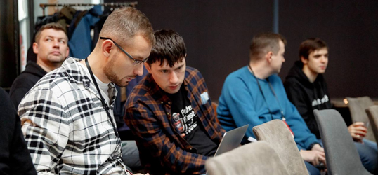
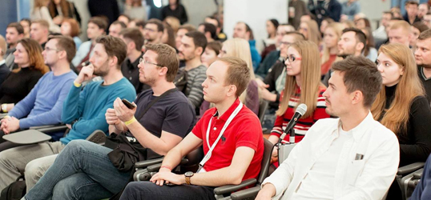

<section class="events" >
  <div class="container" data-scroll-section data-scroll="">
    <h2 class="section-title events-title" section-number="03.">Мероприятия</h2>
    <div class="events__list">
      <article class="events__list-item">
        <div class="item-image">
          
        </div>
        <h3>17 июня прошёл один из офлайн-митапов.</h3>
        <div class="item-text">
          <p>
            Мы продолжили обсуждать рекомендательные системы. В этот раз сделали фокус на объяснимости. Модели машинного обучения — это чёрные ящики, и далеко не всегда понятно, как они принимают решения и почему выдают именно такие прогнозы. Среди прочего, мы поговорили о том, как выстраивать рекомендательные системы, чтобы их работа была чуть понятнее и какими методами исследовать их устройство. Вас также ждёт нетворкинг, подарки и мастер-класс по приготовлению бургеров.
          </p>
        </div>
      </article>
      <article class="events__list-item">
        <div class="item-image">
          
        </div>
        <h3>25 мая прошел очередной бизнес-завтрак.</h3>
        <div class="item-text">
          <p>
            Поговорили об онлайн-кассах, интернет-рекламе и бизнес-процессах в ритейле.<br/>
            Обсудили:
            что произойдёт в ближайшем будущем и как это пойдёт на пользу бизнесу; как развивать бизнес с помощью партнёрских программ; как сформировать общее пространство для командной работы; какие онлайн-каналы использовать для продвижения сайта, привлечения аудитории и раскрутки бренда; как перейти на обязательную маркировку.
          </p>
        </div>
      </article>
    </div>
  </div>
</section>
